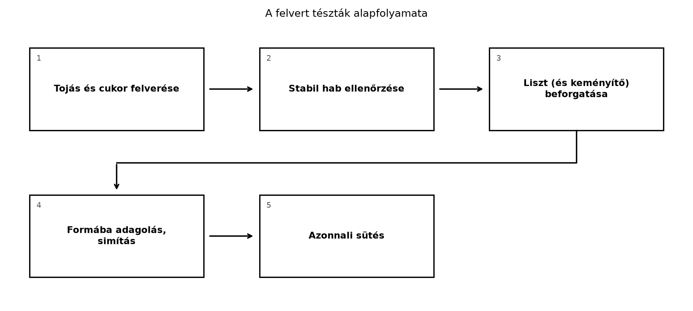

Egy cukrászüzemben a hétvégi rendeléshez harminc tekercs piskótát kell sütni. Ugyanaz a recept, ugyanaz a sütő, mégis az egyik tál tésztából magas, rugalmas lap lesz, a másikból lapos, szalagos, tömör. Vendég a nyersanyagok arányára gyanakszik, pedig a különbség leggyakrabban a hab kezelésében dől el. A felvert tészták – piskóták, tekerccsalapok, tortalapok – szerkezetét nem élesztő, nem vajrétegek, hanem bevert levegő adja. Ha ezt a levegőt a liszt beforgatásakor, a zsiradék bekeverésekor vagy a sütés késleltetésekor elveszítjük, a termék összeesik. Ebben az alfejezetben a felvert tészták rendszerét építjük fel: miből áll, milyen úton készül, és miért a hab védelme a legfontosabb műveleti elv.
Képzeld el a tojáshabot úgy, mint sok apró léggömböt, amelyeket vékony fehérjehártya borít, és amelyek között cukros folyadékfázis van. Minél kisebbek és egyenletesebbek a buborékok, annál stabilabb a hab. Ha zsír kerül a rendszerbe, a fehérjehártya nem tud kialakulni, mert a zsírmolekulák elfoglalják a felületet. Ha a lisztet erővel keverjük, a buborékok szétpattannak, és a liszt sikérje rugalmas szálakat fejleszt. A sütőben a buborékokban lévő levegő hőtágulása, valamint a tojás és a cukor gőznyomása emeli a tésztát, miközben a fehérje koagulál, a keményítő csirizesedik, és megszilárdul a szerkezet.
A felvert készítés közös váza:

A diagram azt mutatja, hogy a hab stabilitásának ellenőrzése nem elhagyható lépés: ha a hab még folyós, a liszt beforgatása után a tészta összeesik; ha a sütés késik, ugyanez történik. Minden későbbi alfejezet – hideg és meleg felvertek, torták, tekercsek – ezt a sémát finomítja.
Definíció. A felvert tészta (piskótatészta) olyan cukrászati tészta, amelyben a lazítást elsősorban mechanikai habveréssel bejuttatott levegő, valamint a sütés közben keletkező gőz biztosítja. Általában tojást, cukrot és lisztet (gyakran keményítővel részben helyettesítve) tartalmaz, és jellemzően nem, vagy csak kevés zsiradékot.
A felvert tészták rendszere négy csoportra osztható összetétel és készítés szerint: könnyű hideg, könnyű meleg, nehéz hideg, nehéz meleg felvert. A csoportosítás a hab védelmén és a zsiradéktartalmon alapul.
| Csoport | Készítés | Zsiradék / dúsítás | Jellemző szerkezet | Példatermék |
|---|---|---|---|---|
| Könnyű hideg | egész vagy szétválasztott tojás hidegen verve | nincs | lazább, nagyobb pórusú | tekercslap, babapiskóta |
| Könnyű meleg | tojás és cukor kb. 40–45 °C-on melegítve, majd hűlésig verve (ellenőrizendő) | nincs | finom pórusú, stabil | génoise tortalap |
| Nehéz hideg | sárgájás massza vajjal vagy mandulával, külön vert hab | vaj, olajos mag | sűrűbb, nedvesebb | diós vagy mandulás piskóta (ellenőrizendő) |
| Nehéz meleg | meleg hab, olvasztott vaj vagy csokoládé beforgatva | vaj, kakaó | finom, puha, nehezebb | vajas génoise, csokoládés massza |
A szétválasztott (a fehérjét és a sárgáját külön verő) és az egészben vert hideg felvert különbségét a Hideg úton készült könnyű és nehéz felvertek alfejezet fejti ki.
A felvert tészta három alapanyaga a tojás, a cukor és a liszt, amelyet gyakran kiegészít keményítő.
Járulékos anyagok: zsiradék (vaj, olaj, sütőmargarin), kakaó, darált olajos mag (mandula, dió, mogyoró), fűszerek, gyümölcs. A zsiradék puhítja és ízesíti a tésztát, de a habot közvetlenül hozzáadva összeesést okoz, ezért vagy a sárgájás részhez keverjük, vagy a liszt után, óvatosan forgatjuk.
Szabály. A felvert tészták térfogatának nagy részét a hab mechanikailag bejuttatott levegője adja. A sütőben ezek a buborékok a hőtágulás és a gőznyomás miatt növekednek, a fehérje koagulációja és a keményítő csirizesedése rögzíti őket. Ezért a hab készítése, a liszt beforgatása és a sütés között a lehető legrövidebb idő telhet el.
A hab stabilitását csökkentik: zsír (a tojássárgája vagy vaj), só (ha fűszeres változatnál só kerül a habba), túlverés (a buborékok összeolvadnak, a hab szemcsés lesz), túl magas hőmérséklet (a fehérje túl gyorsan denaturálódik). A stabilitást növelik: cukor, enyhén savas közeg (egy kevés citromlé vagy borkősav, ha a recept engedi), hűvösebb munkakörnyezet (ellenőrizendő: eljárási paraméterek).
A hab állapotát a felemelt, csúccsal felfelé fordított habverőn ítéljük meg. Az alábbi ábra a lágy habot (visszahajló csúcs), a kemény, fényes habot (álló csúcs), a túlvert habot (fénytelen, darabos, vizet enged) és az egész tojásos hab szalagpróbáját mutatja (a lecsorgó massza egy ideig látható nyomot hagy a felületen).
Definíció. A könnyű felvert tészta alacsony zsiradéktartalmú, jellemzően csak tojásból, cukorból, lisztből és keményítőből készül. A nehéz felvert tészta zsiradékot, kakaót, olajos magőrleményt vagy más dúsító anyagot tartalmaz, ezért sűrűbb, tömörebb szerkezetű, de ízesebb, puhább és lassabban szárad.
A készítés hőmérséklete szerint megkülönböztetünk hideg és meleg úton készült felverteket.
A meleg úton készült könnyű felvert a klasszikus piskóta (génoise) alapja; a hideg út egyszerűbb, sok üzem a tekercseknél, gyors lapoknál használja.
A liszt beforgatásának célja a keményítő eloszlatása a buborékok megtartása mellett. A műveletet nagy felületű spatulával, a tál falától a közepébe húzva, alulról felfelé fordítva végezzük. A gépi keverés itt tilos, mert a buborékokat összetöri, a sikért túlfejleszti, és a tészta szalagos, lapos lesz.
A beforgatás mozdulatsorát és a helyes, illetve a hibás eredményt az alábbi képsor mutatja: a spatula középen lefelé, a tál alján át, a falon felfelé halad, közben a tálat minden mozdulat után negyed fordulattal elforgatjuk.
A zsiradékot – ha a recept tartalmazza – sohasem közvetlenül a felvert habra öntjük. Hideg felvertnél a zsiradékot előbb a sárgájás masszához keverjük, majd a habbal lazán egyesítjük. Meleg felvertnél az olvasztott, de nem forró zsiradékot a liszt beforgatása után, kis adagokban, a tészta szélén csorgatva forgatjuk a masszába. Így a zsír emulgeálódik, puhaságot ad, de nem töri össze a habot.
A sütőben a hab buborékjai tágulnak, a tojás víztartalma gőzzé alakul, és feszíti a szerkezetet. A fehérje 65 °C fölött koagulál, a keményítő 60–70 °C-on csirizesedik (ellenőrizendő: anyag- és keverékfüggő), így a tészta megszilárdul, mielőtt a gőz eltávozna. A tipikus sütési hőmérséklet 170–200 °C, a termék méretétől és a sütőtől függően (ellenőrizendő: receptúra és sütőtípus szerint). A sütő ajtaját az első harmadban ne nyitogassuk, mert a hőmérséklet-ingadozás és a mechanikai rázkódás összeesést okozhat.
A formákat a tészta beöntése előtt elő kell készíteni: vajazás után lisztezés, vagy sütőpapír. A tekercsnél lapos tepsit használunk, a tortához kapcsos formát vagy kerek lapot. A tésztát egyenletes rétegben simítjuk el, hogy a sütés egyenletes legyen. A kész felvert lapot rácson, lefedve hűtjük, és töltésig hűtve tároljuk.
Jogszabály. A tojás felhasználása során a 852/2004/EK rendelet (élelmiszer-higiénia) általános követelményei, valamint a tojás forgalmazására vonatkozó uniós és magyar előírások érvényesek. Nyers héjas tojást tartalmazó, sütetlen felvert keveréket csak közvetlenül sütés előtt készítsünk; hosszabb állás esetén pasztőrözött tojásterméket kell használni (ellenőrizendő: üzemi technológiai előírás, NÉBIH-útmutató). A kész piskótát, ha nem azonnal töltik, hűtve, lefedve tároljuk, és a hűtési láncot betartjuk (ellenőrizendő: hatályos előírás).
Allergének. Minden hagyományos felvert tészta tartalmaz glutént (liszt) és tojást. A nehéz felverteknél megjelenhet tej (vaj, margarin), diófélék (mandula, dió, mogyoró), földimogyoró, szója, kén-dioxid (szárított gyümölcs esetén). A keresztszennyeződés elkerülésére a diós, mogyorós tésztákat külön eszközökkel, külön területen vagy időben szétválasztva készítsük, és a jelölést a 14 jelölendő allergéncsoport szerint tüntessük fel.
A felvert tészták arányaiban a tojás, a cukor és a liszt mennyiségét jellemzően tömegre számoljuk, nem darabra. Gyakori alap arány a könnyű felvertnél: tömegarány, a liszt egy részét (például 10–20%-át) keményítővel helyettesítve. Ez az arány irányadó, nem hatósági előírás.
Példa. Egy 24 cm-es tortához 6 db közepes tojást használunk, amelyek össztömege 330 g (ellenőrizendő: tömegosztály). A cukor és a liszt tömege is 330 g legyen. Mennyi a teljes tészta tömege, ha a keményítő a liszt 15%-át adja?
A teljes tészta tömege: . A gyakorlatban kerekíthetünk: 990 g tésztát kapunk, amely egy 24 cm-es forma 70–80%-os töltéséhez elegendő, a forma magasságától függően (ellenőrizendő: forma specifikáció).
Számítás. Ha egy üzem 5 db 28 cm-es tortalapot készít, mennyi tojásra van szükség a fenti 1:1:1 aránnyal? A 24 cm-es formához a fenti példában 990 g tészta kellett; a 28 cm-es forma területe -szoros, így formánként kb. tészta kell (tanulási becslés).
Az 1:1:1 arányban (a keményítő a lisztmennyiségen belül szerepel) a tojás a tészta egyharmada:
Ugyanennyi cukor (2250 g) és ugyanennyi liszt (2250 g) tartozik hozzá; ha a liszt 15%-a keményítő, ez keményítő és kb. 1912 g liszt.
Ellenőrzés: . ∎ (Ha a tálban maradó tészta veszteségét is számolni akarjuk, azt külön lépésben tesszük: , például 5% veszteségnél .)
A felvert tészta minőségét sütés után az alábbi jellemzőkkel ellenőrizzük:
Hiba: A piskóta lapos, szalagos, a metszeten tömör csíkok látszanak. Ok: A lisztet géppel vagy túl sokáig keverték, a hab összesett, a sikér túlfejlődött. Megelőzés: A lisztet mindig kézzel, spatulával, rövid ideig, forgatva keverje be. Javítás: Az elrontott nyers tésztát nem lehet visszahozni, a kész süteményhez nem használható fel; kisebb hiba esetén morzsás desszert alapnak még felhasználható, de csak minőség-ellenőrzés után.
Hiba: A felvert tészta belül nyers, a felülete túl barna. Ok: Túl magas sütőhőfok vagy túl kicsi forma, így a belső nem sült át. Megelőzés: A sütési hőfokot a tészta vastagságához igazítjuk (vékony lapnál 190–200 °C, vastagabb tortánál 170–180 °C, ellenőrizendő). Javítás: Ha a lap kívül már sötét, belül nyers, selejtezni kell; enyhe esetben alacsonyabb hőfokon tovább süthető, de a hab már nem fog emelkedni.
Hiba: A tészta összeesik a formában, mielőtt sütőbe kerül. Ok: Zsiradék került a habba, vagy a hab nem volt elég stabil, esetleg túl sokáig állt. Megelőzés: A zsiradékot csak az előírt módon, utolsó műveletként, óvatosan keverjük; a kész keveréket azonnal sütjük. Javítás: Összeesett nyers habból már nem lesz megfelelő felvert; legfeljebb kevert tészta jellegű termékké alakítható, de ez nem minősül piskótának.
Egy cukrászda esküvői tortához 12 db 24 cm-es piskótalapot készít szombat délelőtt. A tanuló a meleg úton készült könnyű felvertet választja. A tojást és a cukrot 42 °C-ra melegíti, majd géppel magas habbá veri. A lisztet azonban a habverőgépre szerelt keverőkarral keveri a masszához, mert gyorsabbnak gondolja. Az első sütésnél a lapok alig emelkednek, a metszetük szalagos, a vendégnek küldött fotón azonnal látszik a probléma. Az üzemvezető a hibaelemzés során megmutatja: a hab stabilitása a meleg úton jó volt, de a gépi keverés a buborékok nagy részét szétrobbantotta. A tételt selejtezik, és a következő adagot kézzel, spatulás beforgatással készítik. A munkalapon a kritikus technológiai pont a liszt beforgatása, nem a habverés. Tanulság: a felvert tésztánál a kényelmesebb, gyorsabb gépi lépés a minőséget ronthatja, és a veszteség nagyobb, mint a kézi művelet időigénye.
1. feladat (A) Definiáld a felvert tésztát, és sorold fel az alapanyagait!
2. feladat (A) Egy könnyű felvert receptben 240 g tojás, 240 g cukor és 220 g liszt + 20 g keményítő szerepel. Mennyi a kész tészta elméleti tömege?
3. feladat (B) Egy meleg úton készült nehéz felvertnél a tojás, cukor és liszt tömege egyenként 250 g, a liszt 10%-a keményítő. A vaj mennyisége a tojás tömegének 25%-a. Számítsd ki a vajmennyiséget, a valódi lisztet és a teljes keverék tömegét!
4. feladat (B) Rendezd sorrendbe a hideg felvert készítés lépéseit: liszt beforgatása, tojás és cukor felverése, formába adagolás, sütés, stabil hab ellenőrzése. Miért rossz, ha a lisztet a felverés előtt keverjük a tojáshoz?
5. feladat (C) Egy tanuló zsíros tálban veri fel a tojásfehérjét. A hab nem emelkedik. Magyarázd el, mi a hiba oka a határfelület szintjén, és hogyan kell a tálat előkészíteni!
6. feladat (D) Készítsd el otthon vagy tanműhelyben egy 24 cm-es formához a könnyű hideg felvertet 4 tojásból (tojástömeg kb. 55 g/db). Töltsd ki a technológiai lap fő sorait: nyersanyagok mennyisége, műveleti sorrend, ellenőrzési pont. Sütés után értékeld a magasságot, a metszetet, és írd le, mit javítanál!
Önellenőrzés – válaszok
Feladatok megoldása
A felvert tészták lazítását a habba bejuttatott levegő adja, amelyet a sütőben a hőtáguló gáz és a keletkező gőz tovább feszít. A szerkezetet a tojásfehérje koagulációja és a lisztkeményítő csirizesedése rögzíti. A három alapanyag a tojás, a cukor és a liszt (keményítővel részben helyettesítve); a zsiradék, kakaó és olajos mag nehéz felvertet eredményez. A felvertek hideg vagy meleg úton készülhetnek; a meleg út (40–45 °C) finomabb, stabilabb habot ad. A lisztet mindig óvatosan, forgatva keverjük, a zsiradékot a liszt után vagy a sárgájás részhez, hogy ne törje össze a habot. A kész keveréket azonnal sütni kell. A kész felvert lapot hűtve, lefedve tároljuk, glutént és tojást jelölünk. Ezt a rendszert a következő alfejezetben, a hideg és meleg felvertek konkrét receptjeiben alkalmazzuk (Hideg úton készült könnyű és nehéz felvertek).
A szöveg a cukrászati technológia általános elveire (habképzés, fehérjedenaturáció, keményítőcsirizesedés) támaszkodik. A tojásfelhasználás higiéniája a 852/2004/EK rendelet keretébe illeszkedik; az allergénjelölés a 1169/2011/EU rendelet II. mellékletén alapul. Ellenőrizendő: a tojás és pasztőrözött tojástermék pontos hőmérsékleti paraméterei, a felvert tészták hűtve tárolásának hatósági ajánlása, a sütési hőfok–idő tartománya a különböző termékcsoportokra, valamint a hagyományos piskótareceptek eredeti arányai. A diagram a felvert készítés általános folyamatát szemlélteti; konkrét termékre vonatkozó hőfokot és időt a következő alfejezetek adnak meg.